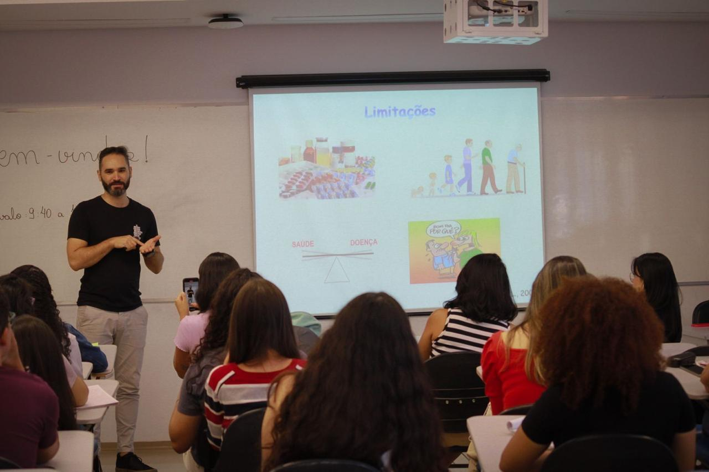
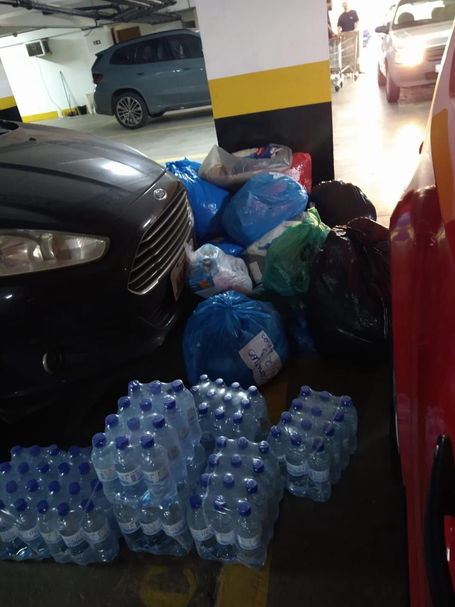

LIGA INTEGRATIVA DE NUTRIÇÃO SOCIAL
Missão
A Liga Acadêmica Integrativa de Nutrição Social (Lins), surgiu com a missão de promover o bem-estar e prestar apoio à comunidade por meio de práticas que unem a ciência da nutrição e a promoção da saúde. Com foco na melhoria da qualidade de vida, a Liga busca oferecer um acolhimento humanizado, desenvolvendo atividades que envolvem educação nutricional, prevenção de doenças, além de ações de conscientização sobre hábitos alimentares saudáveis. Através de projetos sociais, eventos e parcerias com instituições locais, seu objetivo é transformar positivamente a realidade das pessoas, ampliando o acesso à informação e proporcionando cuidados voltados à saúde integral da população.
Foco das Atividades
Nutrição social por meio de:
- Palestras
- Projetos sociais com abordagens nutricionais
Diretoria
A LINS conta com um total de 9 membros, dos quais 7 são diretores.
São membros da diretoria:
• Nayla Souza (Presidente);
• Amanda Borçari (Vice Presidente);
• Ana Júlia (Marketing),
• Beatriz Gontijo (Marketing);
• Emanuele (Diretora de Decretariado);
• Juliana (Secretariado);
• Julia (Diretora de Planejamentos);
• Sabrina (Diretora de Planejamentos).
Criação
A Liga Acadêmica Integrativa de Nutrição Social foi fundada no dia 15 de março de 2024, com o propósito de promover o bem-estar integral e oferecer suporte à comunidade por meio de iniciativas voltadas para a saúde, nutrição e acolhimento social.
Contato
Fique a vontade para enviar uma mensagem no e-mail oficial da LINS.
E-mail: linsudf@gmail.com
Atividade Realizada:
Palestra: Interpretação de exames bioquímicos
Descrição: A palestra sobre interpretação de exames bioquímicos abordou os principais exames laboratoriais, como glicemia, função renal e enzimas hepáticas, explicando os parâmetros normais e suas variações. Também foi discutido os fatores que influenciam os resultados e a correlação com o quadro clínico para auxiliar no diagnóstico.
Arrecadação de alimentos
Descrição: As intensas chuvas que assolaram os Estados da Região Sul provocaram enchentes, deslizamentos de terra e a destruição de inúmeras casas e infraestruturas. Milhares de famílias perderam seus bens e enfrentam escassez de alimentos, água potável e itens básicos. O projeto da Lins coordenou uma ação para arrecadar alimentos para a Região.